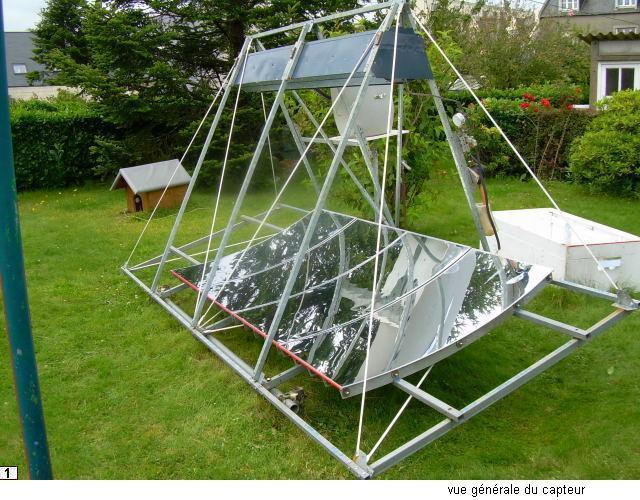
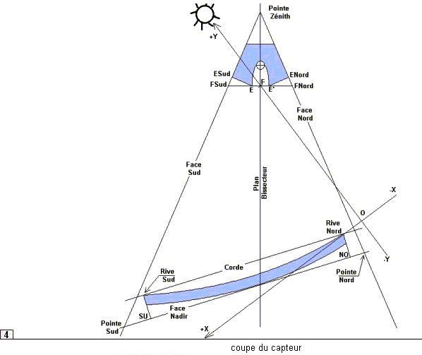
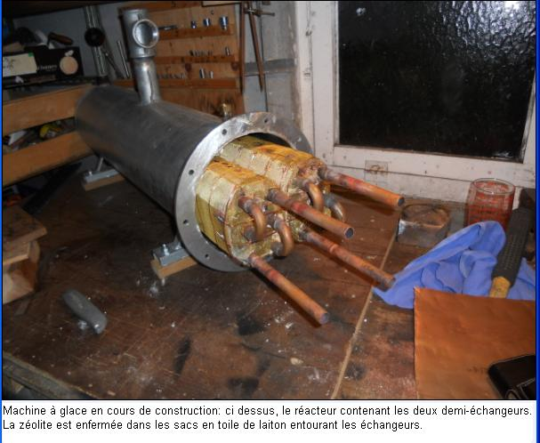
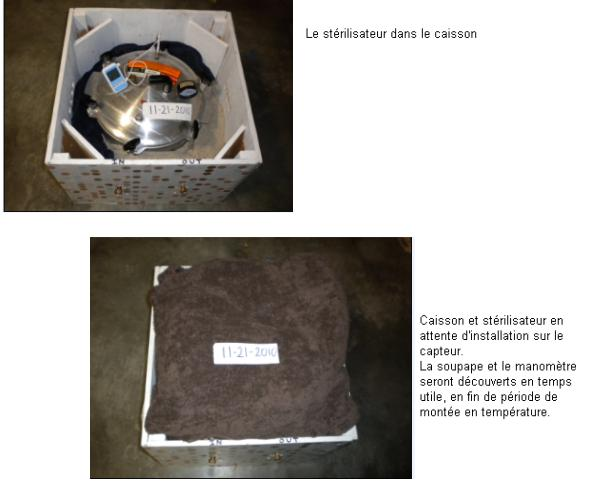
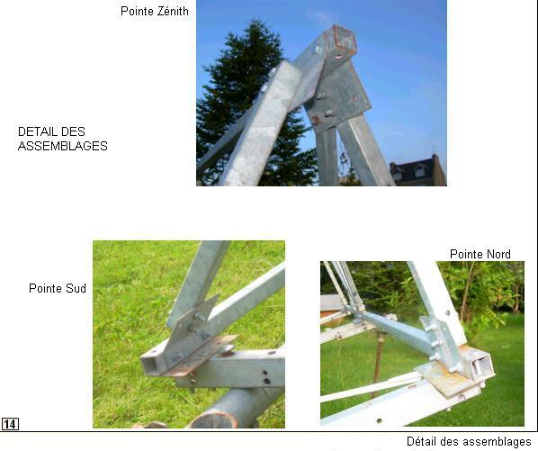
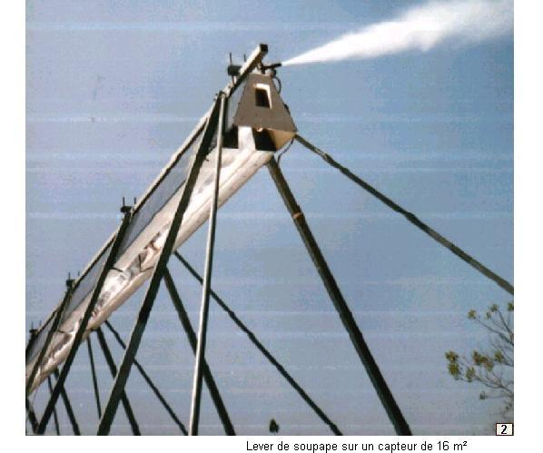

Présentation de la technologie : Soleil - Vapeur
Cuisson alimentaire, Stérilisation médicale
Production de glace par adsorption
avec le groupe solaire thermique à vapeur "soleil-vapeur"
100 à 164°C / 0 à 6 bar / 0.5 à 10 kW
Contexte et situation actuelle
Un travail de conception et d'expérimentation autour de systèmes solaires à concentration a été mené entre les années 1990 et 2017 par un petit groupe de chercheurs et d'ingénieurs indépendants en France et aux USA. Les résultats de ces travaux ont été soigneusement documentés entre 2012 et 2017. Depuis le groupe de travail n'est plus actif et la documentation (et le site web) ne sont plus entretenus.
Pour ne pas perdre cet énorme effort de cette riche documentation de près de 1000 pages, Emmanuel a repris toute la documentation et remis à jour le site web. Cette documentation, accessible en bas de cette page (ou par les liens sur la gauche), mériterait d'être mise à jour (corrections de liens vers les fournisseurs, pagination, ...). Certaines parties n'ont pas été écrites et mériteraient un travail de documentation - après des temps d'expérimentation. Une ancienne version du site reste encore accessible.
Techniquement, la documentation a été transférée sur un compte github et la page initiale d'accueil a été conservée (voir le texte ci-dessous) avec seulement une remise en page et l'ajout de ce contexte. Les documents sont des fichiers PDF plus quelques pages au format html. A titre de test, un fichier pdf a été transformé en fichier markdown (en extrayant les images et le texte puis en effectuant une remise en page). L'idée est de tester l'utilisation de github pour faire du suivi des modifications et des mises à jours à plusieurs contributeurs. Si vous êtes intéressés pour contribuer à mettre à jour cette documentation ou à gérer la mise à jour avec github, contactez Emmanuel.
Certains documents sont sous licence Creative Commons mais un échange avec l'auteur des documents a permis de valider que sa volonté est de rendre accessible toute cette connaissance. L'ensemble des éléments de ce site et tous les documents pdf téléchargeables sont donc sous licence Creative Commons CC-by-SA.

Introduction au travail de conception
Le propos est de rassembler les connaissances scientifiques et technologiques relatives à la conception, la construction et l'utilisation d'une installation solaire thermique à moyenne température destinée à la cuisson, à la stérilisation alimentaire et médicale et à la production de glace par adsorption, en utilisant comme fluide thermique de la vapeur d'eau à la température de 100 à 165° C, soit à une pression de 0 à 6 bar manométriques, dans une gamme de puissance disponible pour l'utilisateur de l'ordre de 0,5 à 10 kW, ou plus si besoin.

Cette installation solaire comprend:
- Un dispositif de production de vapeur à l'aide d'un capteur solaire thermique à conduite manuelle, composé de:
- un miroir cylindro parabolique, orienté Est-Ouest
- un Concentrateur Parabolique Composé,
- une chaudière, en l'occurence un tube installé en fond du Concentrateur,
- une charpente tubulaire,
- un dispositif manuel de pointage du capteur,.
- Des dispositifs d'utilisation de la vapeur, parmi lesquels notamment une plaque de cuisson à vapeur**, au fonctionnement identique à celui d'une plaque de cuisson électrique, sur laquelle l'utilisateur pose son récipient de cuisson alimentaire ou de stérilisation médicale. D'autres dispositifs (serpentin immergé, serpentin extérieur au récipient de cuisson....) sont également décrits.
Cette installation solaire à concentration peut trouver une utilité dans les régions bénéficiant d'un bon ensoleillement direct ( à l'exclusion du rayonnement diffus) , et aux ressources énergétiques traditionnelles limitées. L'installation, de conception rustique, est à conduite entièrement manuelle, sans recours à aucun automatisme, ni asservissement, ni besoin d'un raccordement électrique.
On n'aborde donc pas ici le domaine de l'énergie solaire thermique à température inférieure à 100°C (eau chaude sanitaire, chauffage de l' habitat), ni le domaine de l'énergie thermique à haute température (centrales électro-solaires).On n'aborde pas non plus le domaine des cuiseurs-boites ou des cuiseurs-paraboles, largement décrits par ailleurs.
L'utilisation d'un fluide thermique, en l'ocurence la vapeur, permet de regrouper en un point d'utilisation un flux énergétique solaire réparti dans l'espace, et de disposer d'une puissance importante. Le capteur « soleil-vapeur » n'est pas destiné à un usage personnel ou familial, il est destiné à un usage professionnel ou collectif, là où l'énergie thermique est désormais de plus en plus comptée.

Il est un élément de solution pour l'approvisionnement en énergie thermique, comme source principale ou comme appoint, par exemple en restauration collective, ou pour les petites installations agro-alimentaires (abattoir, laiterie, conserveries, semouleries, brasseries...), savonnerie, distilleries en tous genres (parfums, huiles essentielles), production de bio diesel du type jatropha curca, etc ....
L'utilisation-phare, à savoir la stérilisation médicale à la vapeur, justifie à elle seule l'utilité du capteur.Sur le sujet, on peut consulter l'article "Validation of the Efficacy of a Solar-Thermal Powered Autoclave System for Off-Grid Medical Instrument Wet Sterilization" paru dans The American Journal of Tropical Medicine and Hygiene.
Les cuissons à l'huile et les cuissons au four, qui nécessitent des températures plus élevées, ne sont pas pour le moment une priorité dans les travaux de soleil-vapeur, mais l'expérience acquise permet d'ores et déjà de paramétrer un capteur apte à cuire du pain.
Les travaux concernant l'installation solaire se sont déroulés principalement dans le cadre associatif de soleil-vapeur.org qui regroupait initialement quelques bretons de la région de Brest en France. Il n'y avait au départ ni obligation ni planning, mais il y avait une obstination sans faille. Avec le recul du temps on se rend compte que les progrès ont été rythmés par les rencontres avec la (ou les) personne(s) compétente(s) au bon moment sur le problème du moment, et par les disponibilités en financement (privés pour l'essentiel). Il y a eu ainsi une succession de temps forts (premiers jets de vapeur en 1995, brevet pour le dispositif optique du capteur en 1996,......, plaque chauffante à vapeur en 2010 et stérilisation médicale en 2011.à l'Université Rice de Houston ..) et de temps plus faibles. À ce jour, cette saga ne connait pas encore son point final, quelques chapîtres restent encore à écrire, particulièrement au sujet de la production de la glace.
Une machine de production de glace par adsoption (avec zéolite), fonctionnant avec la vapeur produite par le capteur, a été spécifiquement conçue et réalisée. Au vu des résultats très encourageants qui ont été obtenus, une seconde machine à glace est actuellement (2013) en construction, selon les mêmes spécifications. La première machine, aux allures de prototype expérimental, ne fait pas l'objet d'une publication. Si la seconde machine confirme les résultats de la première, on peut envisager une publication vers le début de 2014.

On présente ci dessous tous les éléments nécessaires pour construire une petite installation avec une surface de miroirs de 2m². En raison des effets d'échelle, redoutables dans le domaine de la thermique, c'est selon notre expérience la plus petite taille possible pour un capteur solaire utilisant un fluide thermique. Néanmoins sa puissance utile est de l'ordre de celle d'un brûleur à gaz ou d'une plaque électrique de taille moyenne sur une cuisinière, pendant six heures par jour. Elle est suffisante pour effectuer trois cuissons de 4 kg de légumes par jour (à l'eau, à la vapeur, ou braisés).
Sa puissance permet surtout de faire fonctionner un stérilisateur médical à vapeur par exemple du type All American 1915X ou 1925X, d'une capacité brute de 14 et 25 litres.

Mais hormis la stérilisation médicale, le petit capteur de 2 m² a une vocation essentiellement pédagogique. En raison de l'absence de culture en matière de vapeur, et des contraintes inhabituelles imposées par l'énergie solaire, l'implantation d'une installation solaire thermique relève quelque peu du parcours initiatique. Sauf à être dans des conditions particulièrement favorables, il n'est pas conseillé de commencer par un capteur de grande taille de 12 ou 20 m². Il est préférable de commencer par un petit capteur de 2 m², pour laisser l'énergie solaire et ses utilisateurs s'acclimater l'un à l'autre. Le petit capteur est un bon point de départ avant d'envisager des machines plus importantes (et plus rentables sur un plan énergétique en raison de l'effet d'échelle). Dans le petit capteur on retrouve tant pour le constructeur que pour l'utilisateur tous les ingrédients d'une machine plus importante, mais à taille humaine.L'intérêt du système proposé est d'être ultérieurement sans limite de taille (on peut juxtaposer des capteurs de 10 kW), mais il est indispensable de commencer petit. Que penser d'un constructeur amateur débutant qui commencerait par construire un voilier de quinze mètres sans même avoir au préalable fait ses premières armes sur une petite barcasse pour bord de plage ? S'il n'y a pas, à tous les niveaux (constructeur, utilisateur...), d'appropriation d'un petit capteur de 2 m², il ne faut pas rêver d'un capteur plus grand, mais au moins l'échec aura été limité, et le petit capteur trouvera ailleurs une utilisation en stérilisation médicale.
Pour construire un capteur tel que celui proposé ici, le niveau de technicité requis est celui de l' « amateur soigneux », le terme amateur étant pris au sens de « qui aime bien », et non pas au sens de « dilettante ». Tracer, couper et percer des tubes avec précision ne requiert pas une technicité hors du commun.
On peut comparer la construction d'un capteur avec la construction d'une charrette à cheval dans les campagnes européennes au 19ème siècle: certains composants provenaient d'usine, par exemple l'essieu venu de forge avec ses deux fusées tournées côniques, les moyeux des roues, l'approvisionnement en produits semi finis, barres de fer, etc... La construction de la charrette proprement dite, des roues et du harnachement sont effectués sur place par le charron, le forgeron, le bourrelier. Ainsi pour le capteur, certains composants proviennent d'usine: les profils paraboliques, l'approvisionnement en tubes et tôles, la confection du bouilleur.., mais la construction du capteur lui même est à faire au plus près possible de ses utilisateurs.

Un premier mot d'ordre: de la rigueur. La force (mais aussi la faiblesse) du solaire, c'est que « ça marche toujours un peu ». Il ne faut pas se contenter du « un peu », il faut viser plus haut.
Un deuxième mot d'ordre: n'effectuez aucune modification. De nombreux paramètres entrent en ligne de compte dans le dessin du capteur, et l'on ne prétend pas ici avoir parfaitement pénêtré et décrit leur fragile équilibre. Aussi, dans un premier temps, il convient pour le constructeur de respecter à la lettre toutes les indications fournies.
Le capteur tel que proposé ci dessous mérite de nombreuses améliorations. Mais pour le capteur comme pour un avion, comme pour un voilier, il y a une multitude de paramètres que le débutant ne peut pas maitriser d'emblée tous ensemble. Il suffit d'en négliger un pour que centre de gravité de l'avion, ou le centre de dérive du voilier, soient déplacés au point de les rendre ingouvernables et il est probable que personne ne trouvera jamais l'explication de l'erreur.
Voici les conseils donnés à des constructeurs amateurs d'un petit avion de tourisme (pouguide.org): "...Copiez exactement, sans rien changer. N'en faites pas à votre tête. Réservez à plus tard vos innovations, après que vous aurez 10 heures de vol. A ce moment, vous jugerez vos inventions sous un angle très différent..." Ou bien encore: « ..Ne pas chercher à innover, profiter de l'expérience acquise par des prédécesseurs expérimentés. On verra pour le prochain. Ainsi vous éviterez des échecs si fréquents dans ce genre d'entreprise ».
Pour aborder en douceur la fabrication d'un capteur, il est possible également d'utiliser la malle pédagogique, qui fournit toutes les indications pour construire une maquette (non opérationnelle) du capteur, pour construire un échantillon en grandeur nature du miroir, et pour construire un échantillon en grandeur nature du Concentrateur Parabolique Composé (1- Chap VII).
Avant d'entrer dans le vif du sujet, livrons nous à un petit calcul, dont chacun tirera les conclusions qu'il voudra.
Soit une surface boisée de un hectare en zone tempérée, exploitée correctement. Elle produit entre 2200 et 3600 kg de bois sec par an, dont le pouvoir calorifique est de 15 à 16 MegaJoule par kg. On récupère donc chaque année au moins 2 200 * 15 = 33 000 MJ, et au plus 3 600 * 16 = 57 600 MJ.sur un hectare. On retient ici le chiffre de 4 MJ d'énergie-bois par an et par mètre carré de surface boisée. Une fois introduits dans une chaudière avec un rendement de 0,6 on obtient 2,4 MegaJoule de vapeur par m² et par an. S'agissant d'une surface boisée en zone tempérée, on considère qu'elle reçoit un flux solaire annuel de l'ordre de 5 000 MJ par mètre carré et par an. .
Le rendement en bois / énergie solaire est donc de l'ordre de 4 / 5 000 = 0,08 %, et le rendement en vapeur de l'ordre de 0,05%
Soit par ailleurs un capteur du type « soleil-vapeur », fonctionnant pendant 1000 heures par an sous un flux solaire de 900 Watt par m²,avec un rendement de 0.5. Pour Un mètre carré de capteur, on obtient 1000 heures 900 Watt * 3600 secondes * 0,5 = < 1 620 MegaJoule de vapeur par m² et par an.* ( Le Joule est l'unité d'énergie mécanique, thermique, électrique... 1 Watt = 1 Joule/seconde; 1 MegaJoule = 1 000 000 J)
Le rapport entre « l 'énergie vapeur » disponible avec 1 m² de surface boisée, et « l'énergie vapeur » disponible avec 1 m² de capteur solaire, est de 2.4/1620, soit 1/675. Sans ergoter sur les détails du raisonnement (on ne tient pas compte du travail du bucheron, ni de la construction de capteur, etc... etc...), on retient ici comme une image qu'il y a "deux zéros avant la virgule décimale" de différence entre la forêt et le capteur. On entrevoit aussi le rendement utilisable de la biomasse par rapport au flux solaire, qui oscille entre le dix millième et le millième. En reprenant le calcul avec l'huile de Jatropha Curcas, les ordres de grandeur restent désespérément les mêmes (800 à 1800 litres par hectare, à 37 MegaJoule/kg ?). En poursuivant les calculs avec l'huile de tournesol, il n'y a aucune amélioration (1 200 Kg, à 38 MegaJoule/kg ?).
Pourtant depuis la conquête du feu, il est beaucoup plus facile de cuire ses aliments avec du bois, du charbon ou du gaz qu'avec un capteur solaire, mais c'est bien parce que la nature a patiemment et préalablement capté, transformé, concentré et mis en conserve gratuitement l'énergie solaire. Sauf tout le respect dû aux bucherons et aux mineurs de fond, l'homme n'a plus qu'à se servir, comme on viendrait se servir gratuitement dans une grande armoire à confitures, laissant le sol jonché de pots cassés et à demi-entamés (on commence même à entrevoir le fond de l'armoire ). Quand c'est à l'homme de capter et concentrer le rayonnement solaire, de fabriquer lui même la confiture, on commence alors à entrevoir le vrai coût technologique et économique de l'énergie.

Documentation
La documentation est divisée en parties et en chapitres. La pagination est spécifique à chaque chapître. Une table des matières détaillée figure en tête de chaque chapître. Tous les documents pdf sont datés en pied de page. Le sommaire à gauche de l'écran tient également lieu de plan du site. * Partie 1 Le capteur solaire et la production de vapeur * Partie 2 Cuisson alimentaire et stérilisation médicale * Partie 3 Production de glace par adsoption * Partie 4 Mémento technologique * Partie 5 Vers d'autres horizons * Partie 6 Cuiseur "Fresnel" à conduite manuelle
Toutes les documentations en un seul fichier
1ère partie: le capteur et la production de vapeur
- 1-Chap.I- Dossier de calculs
- 1-Chap.II- Conception du capteur
- 1-Chap.III- Etude du capteur
- 1-Chap.IV- Etude du circuit de production de vapeur
- 1-Chap.V- Construction du capteur
- 1-Chap.VI- Installation, Conduite, Performances, Maintenance
- 1-Chap.VII- La Malle Pedagogique
- 1-Chap.VIII- Plans Informatiques
- 1-Chap.IX- Ombre portée d'un baton
- 1-Chap.X- Positions du capteur
2ème partie: Utilisation de la vapeur
- 2-Chap.I- La plaque chauffante à vapeur
- version PDF
- Version markdown visible en ligne
- 2-Chap.II- Le Caisson isolant
- 2-Chap.III- La Stérilisation Médicale
- 2-Chap.IV- La Cuisson Alimentaire
- 2-Chap.V- Performances et autres concepts
- 2-Chap.VI-VIII Autres Utilisations et Procedes
3ème partie: Production de glace par adsorption
- 3-Chap.I- Présentation générale de la machine à glace
- 3-Chap.II- La Documentation disponible
- 3-Chap.I- Etude de la machine à glace
- 3-Chap.IV- La Construction de la machine à glace
- 3-Chap.V- Fonctionnement et Performances
- 3-Chap.VI- Choix fondamentaux et discussion
- 3-Chap.VII- Documentation technique et Fournisseurs
4ème partie: Memento technologique
- Introduction au memento
- 4-Chap.I- La Vapeur
- 4-Chap.II- Unites anglo saxonnes
- 4-Chap.III- Tubes, Toles, etc
- 4-Chap.IV- Boulons, Vis, Rivets
- 4-Chap.V- Plomberie et Filetages
- 4-Chap.VI- Le Brasage
5ème partie: vers d'autres horizons
- Vers d'autres horizons
- Bibliographie
- Le rendement de Carnot
- Cuisson et Anthropologie
- Cuisson solaire : quelques aspects techniques
- L'effet d'echelle et ses ravages
- Cuisson solaire : quelques aspects thermiques
- Cuisson solaire : quelques aspects humains
- Petit panorama partiel des cuiseurs solaires
- Cuiseur solaire à caloducs étagés
- Proposition : Chauffage à caloducs pour les hautes latitudes
- Proposition : Machine à glace et gaz d'échappement
- Proposition : Pommes de terre et réfrigération
- Cuiseur photovoltaïque
- Dessin d'un CPC pour capteur symétrique
- Un capteur symétrique avec CPC: le Culbuto
- épilogue
6ème partie: Cuiseur "Fresnel" à conduite manuelle
- 6-Chap.I-Vue d'ensemble
- Conception et Etude du cuiseur
- 6-Chap.II-Le suivi du soleil par un capteur Fresnel
- 6-Chap.III-Les miroirs sous tous leurs angles
- 6-Chap.IV-Détermination du rayon de courbure des miroirs
- 6-Chap.V-Le CPC du second etage et le couplage des deux etages
- 6-Chap.VII Etude des poutres du premier étage
- 6-Chap.VIII- Etude des miroirs du premier etage
- 6-Chap.IX-Leviers de manoeuvre et boitiers de réglage
- 6-Chap.X-Commentaires
-
6-Chap.XI-Récapitulation des éléments théoriques et des cotes de construction
-
Construction du cuiseur
- 6-Chap.X-Les poutres
- 6-Chap.XI-Les miroirs du Ier étage
- 6-Chap.XII-Le CPC
- 6-Chap.XIII-La charpente du cuiseur
- 6-Chap.XIV-Dispositif manuel de suivi du soleil
- 6-Chap.XV-Le circuit de vapeur
- 6-Chap.XVI-Installation du cuiseur
- 6-Chap.XVI-Conduite du cuiseur